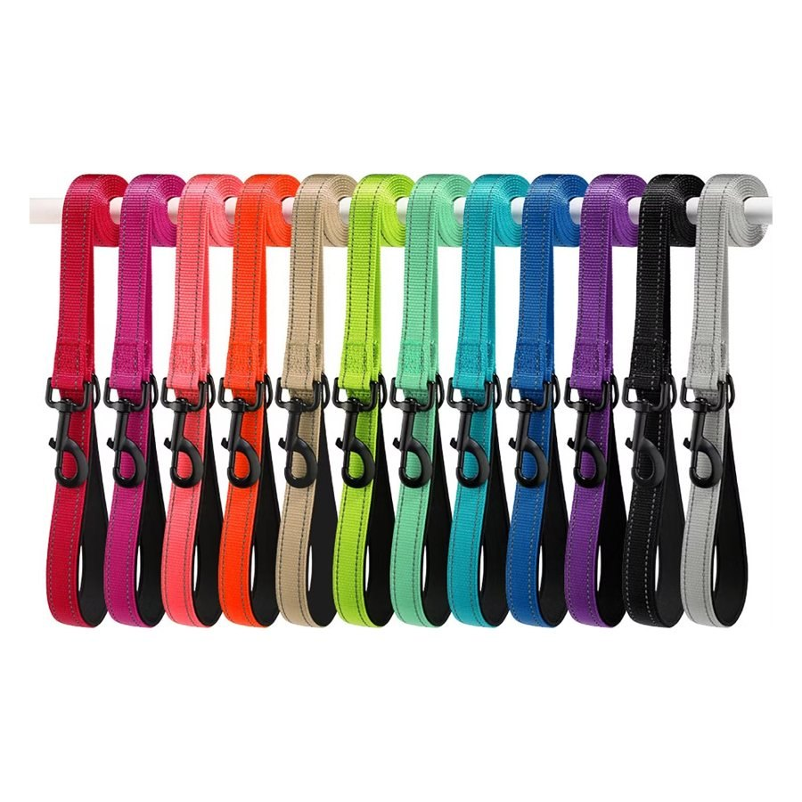

Start / Heimtierbedarf / Smarter Futterautomat mit App/WLAN (3–6 l, optional mit Kamera)

Heimtierbedarf
Smarter Futterautomat mit App/WLAN (3–6 l, optional mit Kamera)
WLAN-Futterautomat für Katze und Hund mit App-Zeitplan, Portionssteuerung und optionaler HD-Kamera mit Zwei-Wege-Audio.
Der smarte Futterautomat portioniert Trockenfutter nach Zeitplan und lässt sich per App über WLAN steuern; in der Kameraversion beobachtet eine Weitwinkel-Kamera den Napf, optional mit Mikrofon und Lautsprecher für Zwei-Wege-Audio. Hochwertige Geräte haben einen Edelstahlnapf, eine abnehmbare, spülbare Futterkammer, Futterstau-Erkennung und einen Batterie-Backup für Stromausfälle. Premium-Käufer erwarten eine ausgereifte App mit deutschsprachiger Oberfläche, DSGVO-konforme Cloud-Anbindung und Updates. Rechtlich ist es Funkanlage (RED) mit Netzteil und – bei Kamera – Datenschutzrelevanz.
Technische Daten
| Fassungsvermögen | 3–6 l Trockenfutter |
|---|---|
| Steuerung | App über WLAN, Zeitplan und Portionsgröße |
| Stromversorgung | 110–240 V Netzteil |
| Zolltarifnummer (HS) | 84798997 |
EU-Normen und Vorschriften
RED 2014/53/EU + Del. VO (EU) 2022/30Funkanlagen-Richtlinie inkl.; Cybersicherheitsanforderungen (anwendbar seit 1.8.2025, Norm EN 18031-1)LVD 2014/35/EU + EMC 2014/30/EUElektrische Sicherheit und EMV für Gerät und NetzteilRoHS 2011/65/EUBeschränkung gefährlicher Stoffe in ElektrogerätenElektroG / WEEERegistrierung bei stiftung ear und RücknahmepflichtVO (EU) 2023/1542 / BattGBatterieverordnung für Backup-Batterien (Kennzeichnung, Registrierung)GPSR (EU) 2023/988Produktsicherheit, EU-Verantwortlicher, Rückverfolgbarkeit
Passt dazu
Trinkbrunnen für Katze und Hund (Keramik oder Edelstahl, 2–4,5 l, mit Ersatzfiltern)Leiser Keramik-Trinkbrunnen mit Mehrfachfilter, der Wasser in Bewegung hält und zum Trinken anregt.
Katzenstreu aus Tofu/Pflanzenfaser, klumpend (6-l-Sack)Staubarme, klumpende Pflanzenstreu aus Tofu-Granulat in 1,5-mm-Pellets, biologisch abbaubar.
Weitere Produkte dieser Kategorie
Kratzbaum XXL mit Sisalstämmen und Plattformen (ca. 140–200 cm)Standfester Kratzbaum für große Katzen: dicke Sisalstämme, Plüschplattformen und Höhle auf rund 1,70–1,80 m.
Hundegeschirr gepolstert, reflektierend, mit passender Leine (Set)Gepolstertes No-Pull-Geschirr mit reflektierenden Elementen, dazu passende Leine, in den Größen S bis L.
GPS-Tracker für Haustiere (4G-Halsband, wasserdicht, App)4G-GPS-Tracker mit 4.000-mAh-Akku fürs Hundehalsband: Live-Ortung per App, Verlaufsspur, wasserdichtes Gehäuse.
Transportbox für Katze und kleine Hunde (Kunststoff, belüftet, Metalltür)Robuste Hartschalen-Transportbox mit Metalltür und Lüftungsöffnungen in den Größen S bis XXL, ab XL mit Rollen.
Hundebett orthopädisch (Memory-Schaum, waschbarer Bezug, Größe S-L)Rechteckiges Hundebett mit Memory-Schaum-Kern, wasserdichter Lage und abnehmbarem, maschinenwaschbarem Plüschbezug.
Interaktives Katzenspielzeug, elektrisch (selbstrollender Silikonball, USB-Akku)Selbstrollender Ball mit Silikonhülle, Hindernis-Ausweichfunktion, abnehmbarem Schwanz und USB-Akku.
Selbstreinigende Slicker-Bürste / Entfilzungsbürste für Hund und Katze (Edelstahlstifte)Handliche Slicker-Bürste mit Edelstahlstiften und Selbstreinigungsfunktion zum Entfernen von losem Fell und leichten Verfilzungen.
Keramik-Napf für Katze und Hund, rutschfestSpülmaschinenfester Keramiknapf in Handelsgröße.

Tierhaar-Entferner-Rolle, wiederverwendbarSelbstreinigende Rolle ohne Klebefolie für Textilien.

Hundeleine Nylon, reflektierend, 2 m, gepolsterter GriffRobuste 2-m-Leine mit Reflexfäden und Karabiner.
Katzenangel mit Federn und GlöckchenEinfache Spielangel für Katzen.

Katzentoilette mit Haube, Schwingtür und KohlefilterGeschlossene Katzentoilette inkl. Schaufel.

Welpen-Trainingsunterlagen, saugstark, 50er-PackAuslaufsichere Einweg-Unterlagen.

Hunde-Regenmantel wasserdicht mit Reflexstreifen und KapuzeWasserdichter Mantel mit Geschirr-Öffnung, Größen S–XL.
Hundespielzeug Gummi-Futterball (Snackball) 8 cmRobuster Gummiball mit Snack-Öffnung.